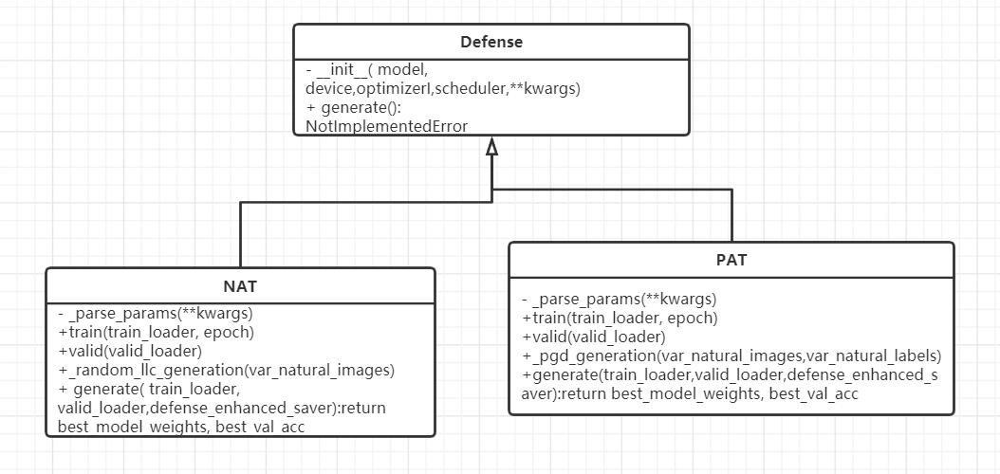

2. 扩展防御算法¶
2.1. 防御算法类图¶

如上图所示，上图为防御算法NAT和防御算法PAT继承Defense类示意图。防御算法内部可自行实现防御过程具体函数，仅需覆写train方法，valid方法，generate方法即可。
2.2. 防御算法存储位置¶
├── EvalBox
│ ├── Attack
│ ├── Analysis
│ ├── **Defense** 防御算法路径
│ │ ├──__init__.py
│ │ ├──nat.py
│ │ ├──pat.py
│ │ ├──....py
│ │ ├──defense.py
│ ├── Evaluation
├── Models
├── utils
├── test
├── Datasets
2.3. 扩展实例——NAT算法¶
NAT算法路径为：
~/AISafety/EvalBox/Defense/nat.py
ACTC算法源代码:
class NAT(Defense):
def __init__(self,
model=None,
device=None,
optimizer=None,
scheduler=None,
**kwargs):
'''
@description: New adversarial training (NAT)
@param {
model:
device:
optimizer:
scheduler:
kwargs:
}
@return: None
'''
super().__init__(model, device)
self.criterion = torch.nn.CrossEntropyLoss()
self.optimizer = optimizer
self._parse_params(**kwargs)
def _parse_params(self, **kwargs):
'''
@description:
@param {
num_epochs:
adv_ratio:
clip_eps_min:
clip_eps_max:
eps_mu:
eps_sigma:
}
@return: None
'''
self.num_epochs = int(kwargs.get('num_epochs', 200))
self.adv_ratio = float(kwargs.get('adv_ratio', 0.3))
self.clip_eps_min =float( kwargs.get('eps_min', 0.0))
self.clip_eps_max = float(kwargs.get('eps_max', 0.3))
self.eps_mu = float(kwargs.get('eps_mu', 0))
self.eps_sigma =float( kwargs.get('eps_sigma', 50))
def _random_llc_generation(self, var_natural_images=None):
'''
@description:
@param {
var_natural_images:
}
@return: ret_adv_images
'''
device = self.device
self.model.eval().to(device)
clone_var_natural_images = var_natural_images.clone()
# get the random epsilon for the Random LLC generation
random_eps = np.random.normal(
loc=self.eps_mu,
scale=self.eps_sigma,
size=[var_natural_images.size(0)]) / 255.0
random_eps = np.clip(
np.abs(random_eps), self.clip_eps_min, self.clip_eps_max)
clone_var_natural_images.requires_grad = True
# prepare the least likely class labels (avoid label leaking effect)
logits = self.model(clone_var_natural_images)
llc_labels = torch.min(logits, dim=1)[1]
# get the loss and gradients
loss_llc = self.criterion(logits, llc_labels)
gradients_llc = torch.autograd.grad(loss_llc, clone_var_natural_images)[0]
clone_var_natural_images.requires_grad = False
gradients_sign = torch.sign(gradients_llc)
var_random_eps = torch.from_numpy(random_eps).float().to(device)
# generation of adversarial examples
with torch.no_grad():
list_var_adv_images = []
for i in range(var_natural_images.size(0)):
var_adv_image = var_natural_images[i] - var_random_eps[i] * gradients_sign[i]
var_adv_image = torch.clamp(var_adv_image, min=0.0, max=1.0)
list_var_adv_images.append(var_adv_image)
ret_adv_images = torch.stack(list_var_adv_images)
ret_adv_images = torch.clamp(ret_adv_images, min=0.0, max=1.0)
return ret_adv_images
def valid(self, valid_loader=None):
'''
@description:
@param {
valid_loader:
epoch:
}
@return: val_acc
'''
device = self.device
self.model.to(device).eval()
correct = 0
total = 0
with torch.no_grad():
for inputs, labels in valid_loader:
inputs = inputs.to(device)
labels = labels.to(device)
outputs = self.model(inputs)
preds = torch.argmax(outputs, 1)
total += inputs.shape[0]
correct += (preds == labels).sum().item()
val_acc = correct / total
return val_acc
def train(self, train_loader=None, epoch=None):
'''
@description:
@param {
train_loader:
epoch:
}
@return: None
'''
device = self.device
self.model.to(device)
for index, (images, labels) in enumerate(train_loader):
nat_images = images.to(device)
nat_labels = labels.to(device)
self.model.eval()
adv_images = self._random_llc_generation(
var_natural_images=nat_images)
self.model.train()
logits_nat = self.model(nat_images)
loss_nat = self.criterion(logits_nat, nat_labels)
logits_adv = self.model(adv_images)
loss_adv = self.criterion(logits_adv, nat_labels)
loss = (loss_nat + self.adv_ratio * loss_adv) / (1.0 + self.adv_ratio)
self.optimizer.zero_grad()
loss.backward()
self.optimizer.step()
print(
'\rTrain Epoch {:>2}: [batch:{:>4}/{:>4}] \tloss_nat={:.4f}, loss_adv={:.4f}, total_loss={:.4f} ===> '
.format(epoch, index, len(train_loader), loss_nat.item(), loss_adv.item(), loss.item()), end=' ')
def generate(self, train_loader=None, valid_loader=None, defense_enhanced_saver=None):
'''
@description:
@param {
train_loader:
valid_loader:
}
@return: best_model_weights, best_acc
'''
best_val_acc = None
best_model_weights = self.model.state_dict()
dir_path = os.path.dirname(defense_enhanced_saver)
if not os.path.exists(dir_path):
os.mkdir(dir_path)
for epoch in range(self.num_epochs):
self.train(train_loader, epoch)
val_acc = self.valid(valid_loader)
adjust_learning_rate(epoch=epoch, optimizer=self.optimizer)
if not best_val_acc or round(val_acc, 4) >= round(best_val_acc, 4):
if best_val_acc is not None:
os.remove(defense_enhanced_saver)
best_val_acc = val_acc
best_model_weights = self.model.state_dict()
torch.save(self.model.state_dict(), defense_enhanced_saver)
else:
print('Train Epoch{:>3}: validation dataset accuracy did not improve from {:.4f}\n'.format(epoch, best_val_acc))
print('Best val Acc: {:.4f}'.format(best_val_acc))
return best_model_weights, best_val_acc
2.4. 扩展说明¶
用户需要实现个人防御算法，并继承基础的Defense类
用户需要将待扩展的防御算法对应文件，如new_defense_method.py，放置于以下路径中
~/AISafety/EvalBox/Defense/
用户需要在2中路径下的__init__.py文件中，添加用户防御算法类的引用：
from .pat import PAT
from .oat import OAT
...
from .new_defense_method import NEW_DEFENSE_METHOD
用户可在集成调用文件testimport_defense.py中，修改对应方法名，方法参数路径信息